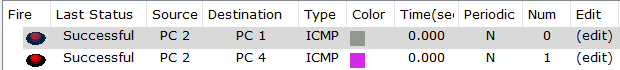

| LanA | LanB | LanC | LanRoute | |
|---|---|---|---|---|
| Количество узлов | 61 | 29 | 289 | 2 |
| Subnet | 192.168.13.0 | 172.16.13.0 | 10.10.12.0 | 15.15.13.0 |
| Mask | 255.255.255.192 | 255.255.255.224 | 255.255.254.0 | 255.255.255.252 |
| Broadcast | 192.168.13.63 | 172.16.13.31 | 10.10.13.255 | 15.15.13.3 |
Разместить на рабочем боле коммутатор и два компьютера, соединить их, проверить хождение пакетов между компьютерами
Схема
Проверка работоспособности сети
Добавить ещё один коммутатор с двумя компьютерами, соединить их с коммутатором существующей сети, проверить хождение пакетов между сетями
Схема
Проверка работоспособности сети
Пакеты между сетями не ходят, так как коммутатор является устройством канального уровня и не может обеспечивать передачу между разными сетями
Добавить маршрутизатор между между двумя коммутаторами, настроить его интерфейсы, проверить хождение пакетов между сетями
Схема
Проверка работоспособности сети
Пакеты между сетями не ходят, так как на компьютерах не указан адрес шлюза по-умолчанию
Настроить для каждого компьютера шлюз по-умолчанию, проверить хождение пакетов между сетями
Проверка работоспособности сети

Добавить ещё один маршрутизатор, подключить к нему коммутатор и компьютер, настроить их, отправить сообщение из сети A в C, отправить сообщение из сети B в С
Схема
Проверка работоспособности сети
Пакеты между сетями не ходят, так как не настроена маршрутизация
Настроить статическую маршрутизацию между сетями, отправить сообщение из сети A в C, отправить сообщение из сети B в С
Проверка работоспособности сети
Настройки устройств
| Устройство | IP-адрес | Маска | Шлюз |
|---|---|---|---|
| PC 1 | 192.168.13.1 | 255.255.255.192 | 192.168.13.62 |
| PC 2 | 192.168.13.2 | 255.255.255.192 | 192.168.13.62 |
| PC 3 | 172.16.13.1 | 255.255.255.224 | 192.168.13.30 |
| PC 4 | 172.16.13.2 | 255.255.255.224 | 192.168.13.30 |
| PC 5 | 10.10.12.1 | 255.255.254.0 | 10.10.13.254 |
| R5 0/0 | 172.16.13.30 | 255.255.255.224 | - |
| R5 1/0 | 192.168.13.62 | 255.255.255.192 | - |
| R5 6/0 | 15.15.13.2 | 255.255.255.252 | - |
| R0 0/0 | 10.10.13.254 | 255.255.254.0 | - |
| R0 0/1 | 15.15.13.1 | 255.255.255.252 | - |